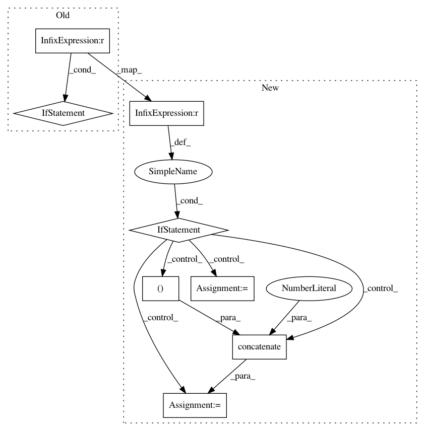

3e44c79a4254da2bf9972dccda44f50517393ad7,unbalanced_dataset/ensemble_sampling.py,BalanceCascade,resample,#BalanceCascade#,132
Before Change
// Check if we have to make an early stopping
if self.n_max_subset is not None:
if self.n_max_subset >= n_subsets:
b_subset_search = False
if self.verbose:
print("The number of subset achieved their maximum")
// Also check that we will have enough sample to extract at the
// next round
if n_elt_maj > np.count_nonzero(b_sel_N):
b_subset_search = False
// Select the remaining data
idx_sel_from_maj = np.nonzero(b_sel_N)[0]
After Change
// Check if we have to make an early stopping
if self.n_max_subset is not None:
if n_subsets == (self.n_max_subset - 1):
b_subset_search = False
// Select the remaining data
idx_sel_from_maj = np.nonzero(b_sel_N)[0]
idx_sel_from_maj = np.concatenate((idx_mis_class,
idx_sel_from_maj),
axis=0).astype(int)
// Select the final batch
x_data = np.concatenate((min_x, N_x[idx_sel_from_maj, :]), axis=0)
y_data = np.concatenate((min_y, N_y[idx_sel_from_maj]), axis=0)
// Push these data into a new subset
subsets_x.append(x_data)
subsets_y.append(y_data)
if self.verbose:
print("Creation of the subset //" + str(n_subsets))
// We found a new subset, increase the counter
n_subsets += 1
if self.verbose:
print("The number of subset achieved their maximum")
// Also check that we will have enough sample to extract at the
// next round
if n_elt_maj > np.count_nonzero(b_sel_N):
b_subset_search = False
// Select the remaining data
idx_sel_from_maj = np.nonzero(b_sel_N)[0]
In pattern: SUPERPATTERN
Frequency: 3
Non-data size: 8
Instances
Project Name: scikit-learn-contrib/imbalanced-learn
Commit Name: 3e44c79a4254da2bf9972dccda44f50517393ad7
Time: 2015-06-30
Author: fmfnogueira@gmail.com
File Name: unbalanced_dataset/ensemble_sampling.py
Class Name: BalanceCascade
Method Name: resample
Project Name: nilearn/nilearn
Commit Name: 5f179bb7fa08c1ba2863f5733238158b4015a08b
Time: 2019-04-18
Author: ju.huntenburg@gmail.com
File Name: nilearn/surface/surface.py
Class Name:
Method Name: load_surf_data
Project Name: geomstats/geomstats
Commit Name: 36bf1cd036d852d10b189727d43fee6ee0b6c66c
Time: 2020-04-02
Author: 62605255+pchauchat@users.noreply.github.com
File Name: geomstats/geometry/special_euclidean.py
Class Name: SpecialEuclidean
Method Name: random_uniform